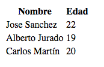

Propósitos del curso:
Para hacer una consulta a una base de datos utilizaremos la función mysqli_query() en la que indicaremos la consulta que queremos hacer.
Para hacerlo un poco más limpio y ordenado vamos a guardar la consulta en una variable y así la podremos reutilizar sin problemas.
Sin más, creamos una variable y le asignamos la consulta a realizar:
$consulta = "SELECT * FROM alumnos";
La consulta anterior nos devolverá todos los registro de la tabla “alumnos”. Si, la tabla se llama igual que la base de datos, que no os confunda esto…
Pero aún no hemos realizado la consulta, ahora debemos utilizar la función mysqli_query() de la siguiente forma:
$resultado = mysqli_query( $conexion, $consulta );
Como hemos venido haciendo, vamos a añadir un poco más de código a lo anterior para que nos muestre un mensaje de error si algo a ido mal:
$resultado = mysqli_query( $conexion, $consulta ) or die ( "Algo ha ido mal en la consulta a la base de datos");
Mostrar los datos de la consulta a la base de datos
Para mostrar los datos de la consulta que hemos realizado lo vamos a hacer muy sencillo pero os animo a que probéis más con este asunto porque es muy interesante y entretenido.
Como lo vamos a mostrar en formato de tabla, en primer lugar creamos la parte de creación de la tabla y el encabezado del mismo:
echo "<table borde='2'>";
echo "<tr>";
echo "<th>Nombre</th>";
echo "<th>Edad</th>";
echo "</tr>";
Bien, ahora utilizamos un While mientras existan registros y dentro del bucle creamos las filas de la tabla:
PHP
while ($columna = mysqli_fetch_array( $resultado ))
{
echo "<tr>";
echo "<td>" . $columna['nombre'] . "
" . $columna['edad'] . "</td>";
echo "</tr>";
}
Y por supuesto cerramos la tabla:
echo "</table>";
Si ejecutamos el código que tenemos, el resultado debería ser algo similar a lo siguiente:

|